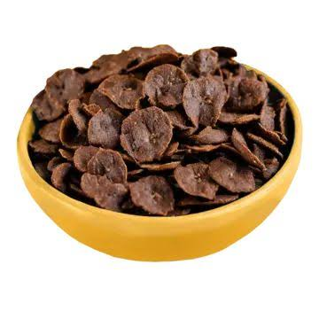
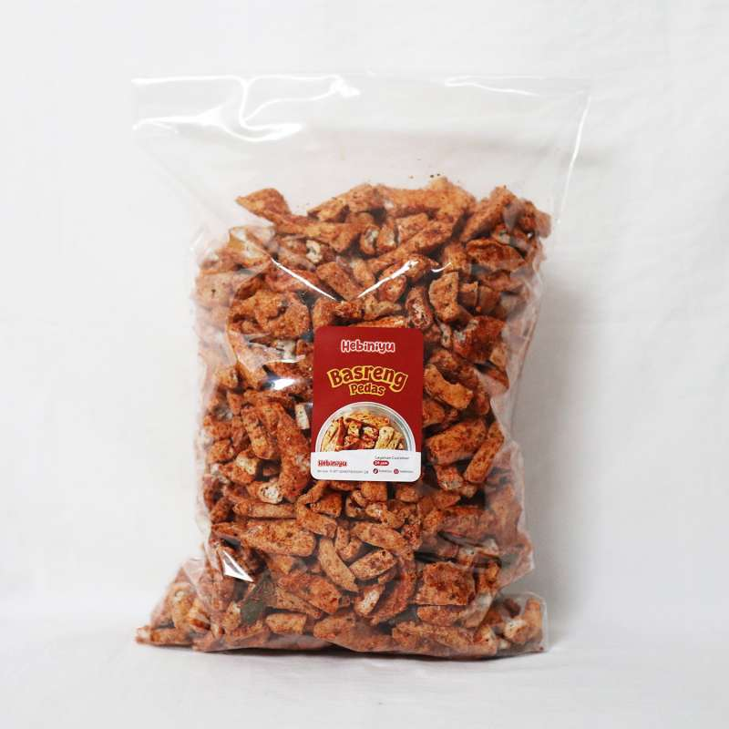
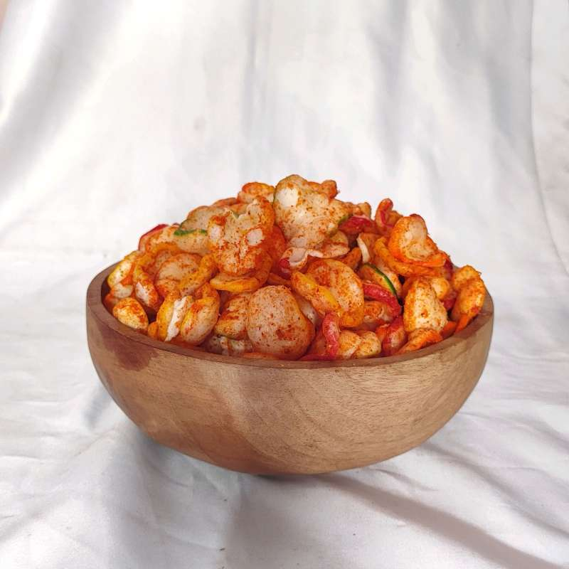
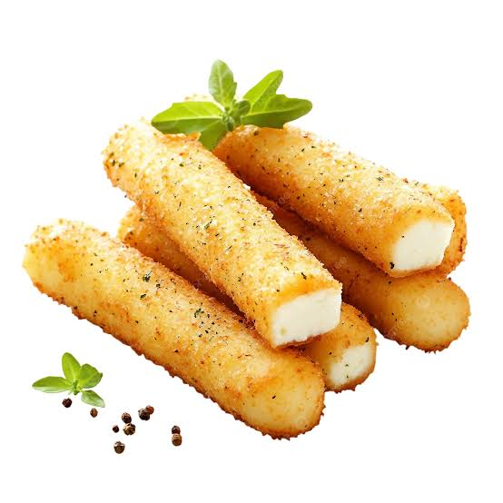

Daftar Produk Kami

Keripik pisang renyah dengan berbagai pilihan rasa seperti original, cokelat, keju, dan balado.
Rp15.000

Bakso goreng kering yang gurih dengan tingkat kepedasan yang bisa dipilih sesuai selera.
Rp18.000

Kerupuk seblak dengan bumbu khas yang pedas, gurih, dan sangat cocok dinikmati kapan saja.
Rp12.000

Stik keju renyah dengan aroma keju yang lezat dan cocok untuk camilan keluarga.
Rp20.000